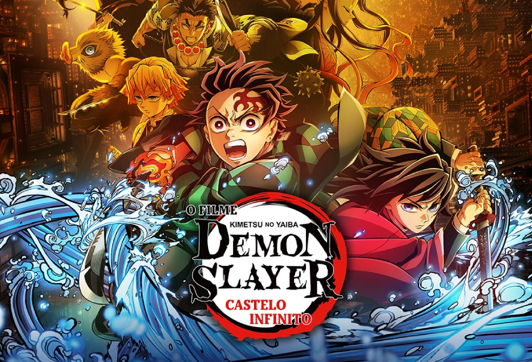
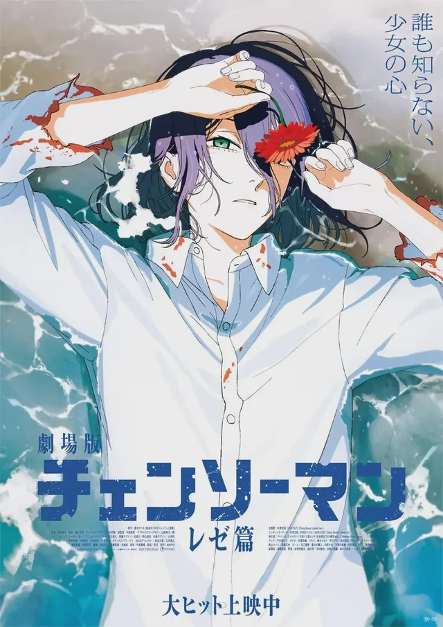
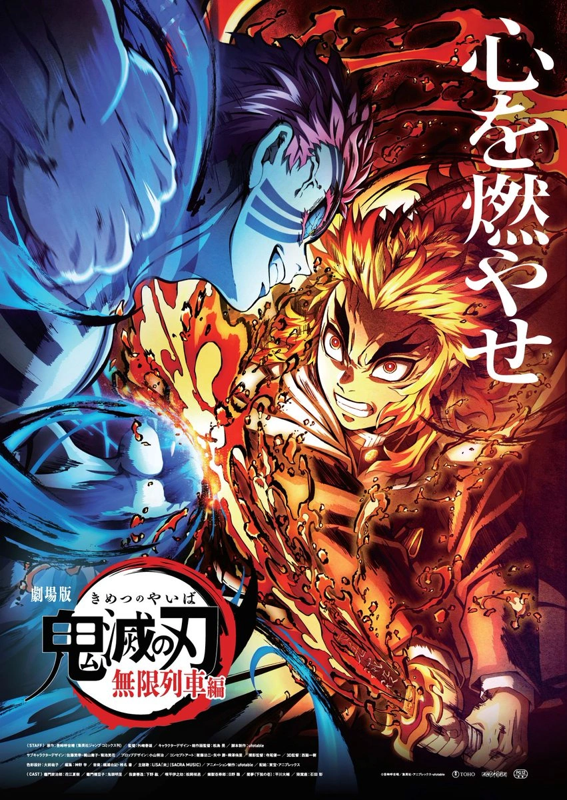
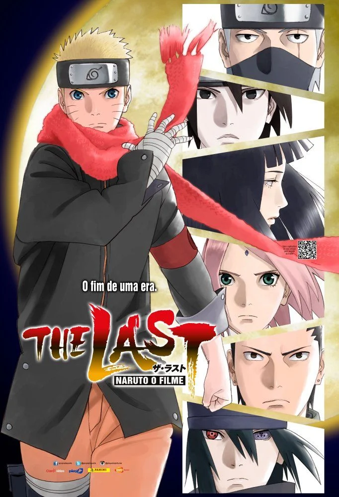

Após o treinamento dos Hashira,Muzan Kibutsujiaparece na Mansão Ubuyashiki, dando início ao confronto definitivo entre os Caçadores de Demônios e os demônios. Tanjiro e os Hashira tentam enfrentar Muzan, mas acabam sendo levados para o Castelo Infinito, uma enorme fortaleza controlada pelos demônios. Lá, os Caçadores são separados e precisam enfrentar alguns dos inimigos mais poderosos dos Doze Kizuki, enquanto se aproximam cada vez mais do confronto final contra Muzan. O filme marca o começo da batalha final de Demon Slayer, com personagens como Tanjiro, Zenitsu, Inosuke e os Hashira enfrentando adversários como Akaza, Doma e Kokushibo .
Gênero: Ação, fantasia sombria, aventura e animação. Ano: 2025. Classificação: 16 anos Direção: Haruo Sotozaki. Estúdio: Ufotable.

Chainsaw Man – O Filme: Arco da Reze continua a história de Denji, que agora tenta aproveitar uma vida mais normal enquanto trabalha como Caçador de Demônios. Certo dia, ele conhece Reze, uma garota misteriosa por quem começa a criar sentimentos. Porém, o encontro esconde segredos, e Denji acaba descobrindo que Reze não é exatamente quem aparenta ser. O filme mistura ação, comédia, romance e fantasia sombria, enquanto Denji enfrenta novos perigos e precisa lidar com seus sentimentos e com as consequências de ser o Chainsaw Man.
Gênero: Ação, aventura, fantasia sombria e comédia. Ano: 2025. Classificação: 16 anos Direção: Tatsuya Yoshihara. Estúdio: MAPPA.

Após os acontecimentos da primeira temporada, Tanjiro, Nezuko, Zenitsu e Inosuke embarcam no Trem Infinito (Mugen Train) para ajudar o Hashira das Chamas, Kyojuro Rengoku, em uma missão para investigar o desaparecimento de vários passageiros. Durante a viagem, eles enfrentam um poderoso demônio que usa sonhos para atacar suas vítimas. Enquanto tentam proteger os passageiros e escapar da armadilha, Tanjiro e seus amigos precisam superar seus próprios medos. O filme combina ação, aventura, fantasia sombria e drama, sendo uma parte importante da história de Demon Slayer
Ação, aventura, fantasia sombria e drama. Ano: 2020. Classificação: 14 anos Estúdio: Ufotable.

Dois anos após a Quarta Guerra Ninja, uma nova ameaça surge quando a Lua começa a se aproximar da Terra, colocando o mundo em perigo. Naruto e seus amigos precisam se unir novamente para impedir uma catástrofe. Durante a missão, Naruto também começa a compreender melhor seus sentimentos por Hinata, enquanto enfrenta novos desafios para proteger aqueles que ama e salvar o planeta.
Ação, aventura, fantasia, romance e ficção científica. Ano: 2014. Classificação: 10 anos Estúdio: Studio Pierrot.